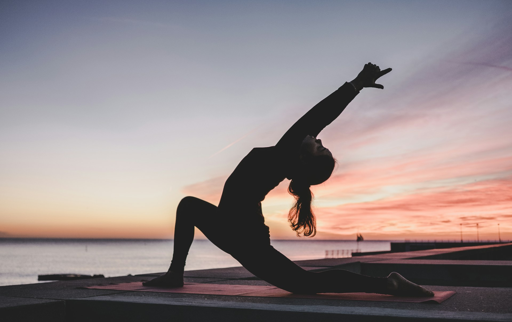
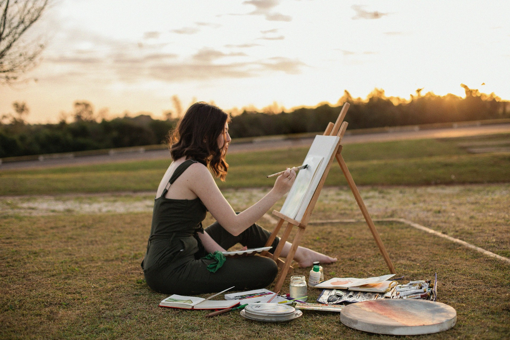

Physical Wellness

- Sleep
- Hot classes (e.g., hot yoga, hot pilates)
- Pilates
- Yoga
- Strength training
- Eat a balanced meal or healthy snack
- Stretching
- Drink plenty of water
April 6, 2026 was the beginning of one of my "seasons of transformation" due the unexpectedly being one of many employees who were laid off due to organizational restructuring. Before this event, I have been engaged in self-care by intentionally doing activites that promote both physical and mental wellness. However, the toll this has taken on my well-being has been heavier than expected, making it more essential for me to prioritize self-care to heal, reflect and refine my career vision, and take meaningful steps towards building a life that aligns with my priorities, values, and needs.
In this exploration, I will share some of my current self-care practices and some new recommended self-care activities from resources I've encountered. It's my hope that sharing this will give you ideas of what to explore for your own seasons of transformation. Wishing you all the best with your journeys!
Here I will describe some of the self-care practices I currently engage in, including physical, mental, and emotional wellness activities.


Based on The Blissful Mind Self-Care and the Noom Self-Care quizzes, emotional and spiritual self-care are the top activity types recommended for me, which aligns well will my current state-of-mind, needs, and goals. Take the quizzes or other self-assessments and find out what activities may be suitable for you!
Source: The Blissful Mind Self-Care Quiz
Source: Noom Self-Care Quiz